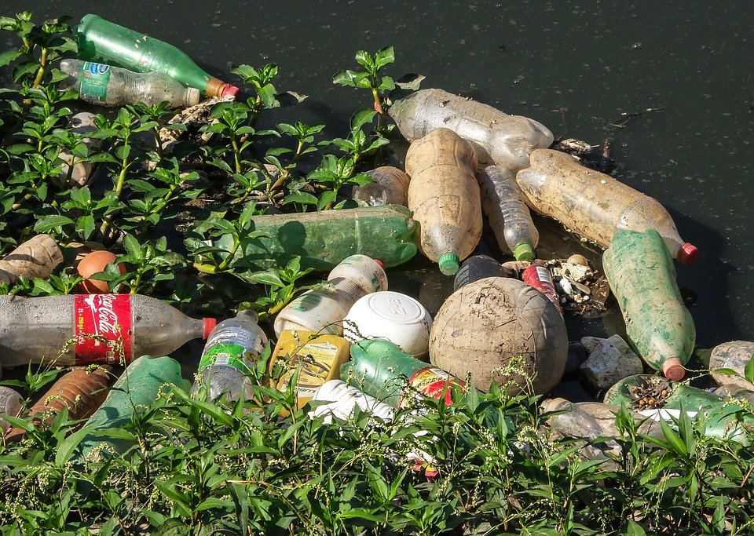

La contaminación por la basura puede desarrollar enfermedades como asma, defectos de nacimiento, cáncer, enfermedades cardiovasculares, cáncer infantil, EPOC, enfermedades infecciosas, bajo peso al nacer y parto prematuro.
